There is a lot kind of typical food in Surabaya. I will devide it into 4 type
Soup
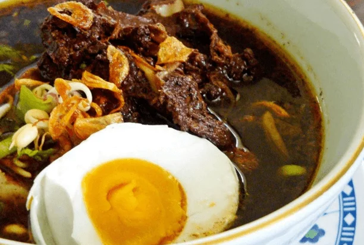
Rawon
Its distinctive black sauce with soft meat is a mainstay menu that is usually eaten by Surabaya residents and tourists who come to Surabaya.
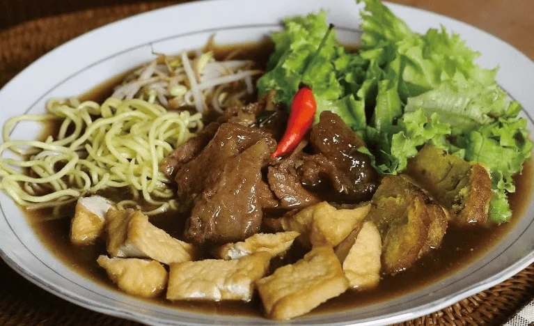
Tahu Campur
Made from beef, fried tofu, bean sprouts, watercress and yellow noodles. All these ingredients are cut into pieces and then poured with a soup
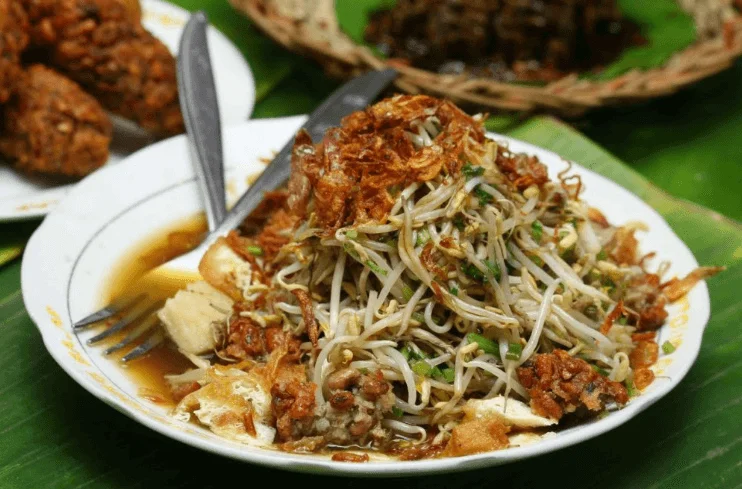
Lontong Balap
First local food. This famous food from the City of Heroes consists of rice cake, bean sprouts, fried tofu, lentho, fried onions, soy sauce and chili sauce.
Sauce Food
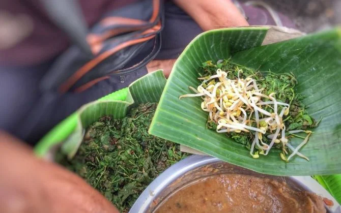
Semanggi
Made from clover leaves and spourts, its uniqueness is the spoon is made from crackers
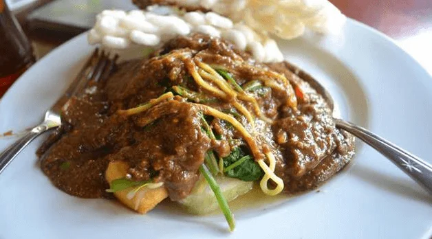
Rujak Cingur
There is two tipe of rujak. One with all cooked ingredients and another one with fruit but one sauce
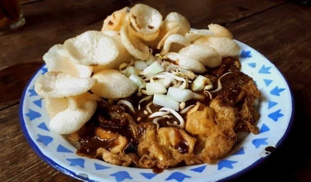
Tahu Tek
Named 'tek' because the seller usually get around and make sound 'tek tek tek' with their equipment
Satay
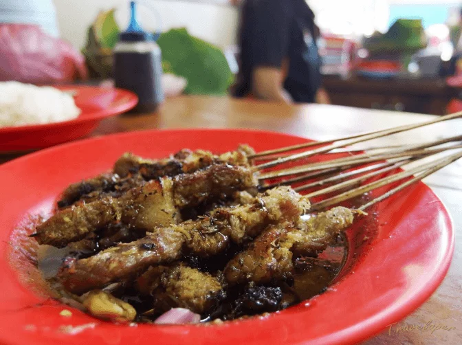
Sate Kelopo
This satay is like ordinary satay but with grated coconut
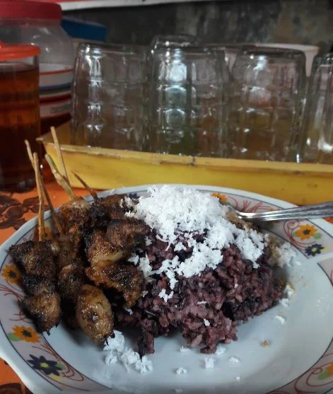
Sate Karak
Made from beef offal with seasoning with black sticky rice
Dessert
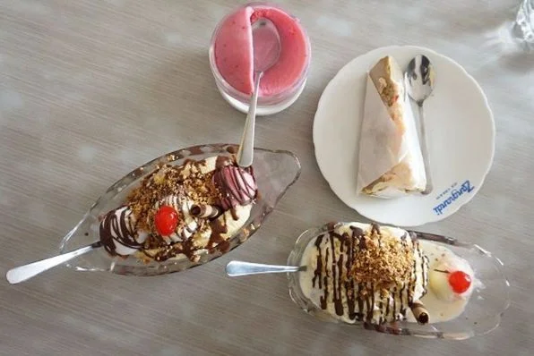
Zangrandi Ice Cream
One of the oldest ice cream from surabaya. First owned by Robert Zangrandi and developed by an Indonesian
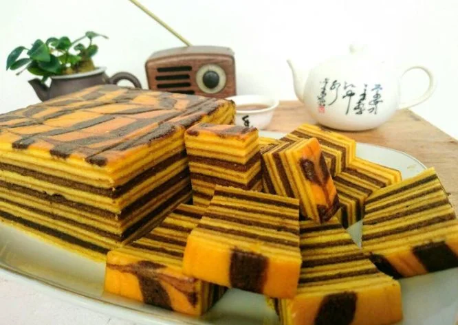
Lapis Surabaya
Modified lapis legit, but softer and only has two layers
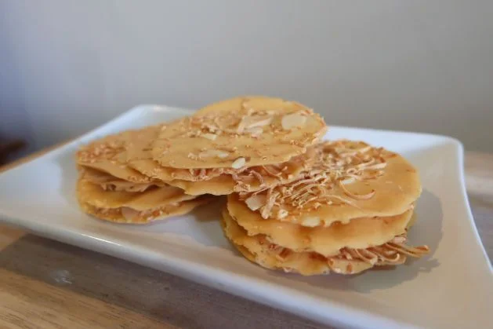
Almond Crispy
Many people love this dessert because its chrunchy texture and thin size